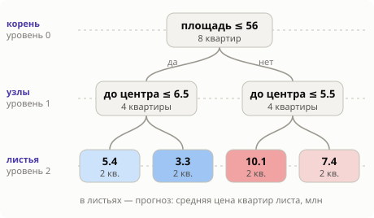

Зачем этот модуль
В формуле бустинга $F_M = F_0 + \nu\sum h_m$ каждое слагаемое $h_m$ — дерево решений. Бустинг — это сотни маленьких деревьев, сложенных вместе. Прежде чем складывать, разберём одно дерево до последнего винтика.
Хорошая новость: дерево — самая понятная модель машинного обучения. Это серия вопросов «признак не больше порога?», как в игре «20 вопросов». Вся хитрость — в том, как выбрать вопросы. Этот урок проходит весь путь от А до Я на одном маленьком примере, где каждое число можно пересчитать на листке.
Двенадцать шагов, каждый отвечает на один вопрос и опирается только на предыдущие. В каждом шаге есть живой пример — двигайте ползунки и перетаскивайте линии.
- Что такое дерево? — игра в вопросы.
- Как называются его части? — корень, узел, лист, глубина, путь.
- На каких данных учимся? — восемь квартир.
- Какое число записать в лист? — среднее.
- Как выбрать один вопрос? — перебор порогов.
- Как выбрать признак? — сравнение выигрышей.
- Как вырастить всё дерево? — повторять то же в каждой части.
- Когда остановиться? — недообучение и переобучение.
- Какую функцию задаёт дерево? — лесенка и прямоугольники.
- А если ответ — класс? — доли в листьях.
- Что дерево умеет и чего не умеет? — четыре свойства.
- При чём здесь бустинг? — складываем маленькие деревья.
Шаг 1. Дерево — это игра в вопросы
Представьте риелтора, который оценивает квартиру на глаз. Он не решает уравнений. Он спрашивает: «Квартира большая?» — «Да». — «Близко к центру?» — «Да». — «Тогда миллионов десять». Два вопроса, один ответ.
Дерево решений (decision tree) делает ровно это. Каждый вопрос имеет один и тот же вид: «значение признака не больше порога?». Ответ «да» ведёт налево, «нет» — направо. Когда вопросы кончаются, мы оказываемся в листе, где записан готовый ответ — число.
Дерево ничего не вычисляет с признаками: не складывает, не умножает. Оно только сравнивает их с порогами. Вся «модель» — это список вопросов и числа в листьях.
Ниже — настоящее дерево, обученное на восьми квартирах (как оно обучено, разберём в шагах 4–7). По горизонтали — площадь, по вертикали — расстояние до центра. Передвиньте чёрную точку — «новую квартиру» — и проследите, какие вопросы задаёт дерево.
Проверьте себя. Не трогая виджет, определите прогноз для квартиры 45 м² в 10 км от центра. Потом поставьте точку и сверьте.
Решение
Вопрос 1: площадь 45 ≤ 56? Да → налево. Вопрос 2: до центра 10 ≤ 6.5? Нет → направо. Лист: 3.3 млн. Это среднее цен двух обучающих квартир из той же области: №1 (3.0) и №3 (3.6).
Заметьте три вещи — они верны для любого дерева:
- Сколько бы признаков ни было, каждый вопрос — про один признак.
- Все квартиры внутри одного прямоугольника получают один и тот же прогноз. Квартира 57 м² и квартира 95 м² на одном расстоянии от центра для этого дерева неразличимы.
- Прогноз меняется скачком на границе: 56 м² и 57 м² могут стоить по мнению дерева очень по-разному.
Шаг 2. Словарь: корень, узел, лист, глубина, путь
- Корень (root) — первый вопрос. Через него проходят все объекты.
- Внутренний узел (internal node) — вопрос вида $x_j \le t$: признак номер $j$ сравнивается с порогом $t$. «Да» — налево, «нет» — направо.
- Лист (leaf) — конец пути. В нём нет вопроса, только число-прогноз.
- Путь объекта — цепочка ответов от корня до листа. Он однозначно определяет лист.
- Глубина (depth) — число вопросов на самом длинном пути. У дерева из шага 1 глубина 2.

Сколько листьев бывает? Каждый вопрос делит группу на две. После одного уровня вопросов групп две, после двух — четыре, после $d$ уровней — не больше $2^d$. «Не больше» — потому что какую-то группу можно перестать делить раньше.
| Глубина $d$ | 0 | 1 | 2 | 3 | 6 | 10 |
|---|---|---|---|---|---|---|
| Листьев не больше $2^d$ | 1 | 2 | 4 | 8 | 64 | 1024 |
Дерево глубины 0 — это один лист без вопросов: всем объектам один и тот же прогноз. Дерево глубины 1 — один вопрос и два листа — называют решающим пнём (decision stump). Запомните его: в бустинге пни работают чаще, чем можно подумать.
Формально дерево задаёт функцию $h(x) = \sum_{j=1}^{J} w_j \,[x \in R_j]$. Здесь $J$ — число листьев, $R_j$ — область пространства признаков, которая попадает в лист $j$, $w_j$ — число в этом листе, а скобка $[x \in R_j]$ равна 1, если объект $x$ в области, и 0 иначе. Читается просто: «найди свою область и возьми её число».
Шаг 3. Данные для всего урока: восемь квартир
Чтобы научиться строить дерево, возьмём набор, который помещается на ладони. Восемь квартир, два признака и ответ — цена. Числа подобраны так, чтобы всё считалось в уме.
| № | Площадь $x_1$, м² | До центра $x_2$, км | Цена $y$, млн |
|---|---|---|---|
| 1 | 30 | 12 | 3.0 |
| 2 | 35 | 3 | 5.0 |
| 3 | 42 | 9 | 3.6 |
| 4 | 50 | 4 | 5.8 |
| 5 | 62 | 10 | 7.0 |
| 6 | 70 | 2 | 9.6 |
| 7 | 78 | 8 | 7.8 |
| 8 | 90 | 3 | 10.6 |
Задача — регрессия: по признакам предсказать число. Ошибку будем мерить так же, как в уроке 1.2: суммой квадратов отклонений прогноза от правды.
- $y_i$
- настоящая цена квартиры $i$
- $\hat y_i$
- прогноз модели для неё
- SSE
- сумма квадратов ошибок (sum of squared errors); чем меньше, тем лучше. Если поделить на число объектов, получится MSE
Шаг 4. Какое число записать в лист
Начнём с конца. Пусть вопросы уже заданы и в лист попала группа квартир. Лист обязан выдать одно число на всех. Какое выбрать, чтобы ошибка была наименьшей?
Проверьте сами: перетащите линию прогноза и найдите положение, при котором SSE минимальна.
Минимум всегда оказывается в среднем значений группы. Это не совпадение: для суммы квадратов лучшая константа — среднее арифметическое (доказательство в две строки — в уроке 1.2).
Значение листа регрессионного дерева — среднее ответов обучающих объектов, попавших в этот лист: $w_j = \frac{1}{n_j}\sum_{i \in R_j} y_i$.
Дерево глубины 0: один лист на всех
Вопросов нет. Прогноз для любой квартиры — среднее всех восьми цен:
$\bar y = \dfrac{3.0 + 5.0 + 3.6 + 5.8 + 7.0 + 9.6 + 7.8 + 10.6}{8} = \dfrac{52.4}{8} = 6.55$ млн.
Насколько это плохо
Считаем ошибку каждой квартиры и возводим в квадрат:
$(3.0 - 6.55)^2 + (5.0 - 6.55)^2 + \dots + (10.6 - 6.55)^2 = 51.74$.
Это наша стартовая ошибка: $\text{SSE}_0 = 51.74$. Любой вопрос обязан её уменьшить — иначе он бесполезен.
Что даст первый вопрос
Вопрос разделит квартиры на две группы. В каждой прогнозом станет своё среднее. Если группы получились «дешёвые» и «дорогие», оба средних окажутся ближе к своим квартирам, чем общее 6.55 — и ошибка упадёт. Осталось найти вопрос, при котором она падает сильнее всего.
Шаг 5. Один вопрос: перебор порогов
Возьмём пока один признак — площадь. Вопрос «площадь ≤ $t$?» определяется порогом $t$. Какие пороги вообще имеет смысл пробовать?
Отсортируем площади: 30, 35, 42, 50, 62, 70, 78, 90. Порог 43 и порог 49 делят квартиры одинаково: слева №1–3, справа №4–8. Значит, важны не сами числа, а между какими соседями стоит порог. Соседних пар семь — и кандидатов семь. По договорённости порог ставят посередине между соседями: 32.5, 38.5, 46, 56, 66, 74, 84.
Пробуем порог 46
Слева квартиры №1–3 с ценами 3.0, 5.0, 3.6. Среднее: $11.6 / 3 = 3.87$.
Справа №4–8 с ценами 5.8, 7.0, 9.6, 7.8, 10.6. Среднее: $40.8 / 5 = 8.16$.
Считаем ошибку после разбиения
Слева: $(3.0 - 3.87)^2 + (5.0 - 3.87)^2 + (3.6 - 3.87)^2 = 2.11$.
Справа: $(5.8 - 8.16)^2 + \dots + (10.6 - 8.16)^2 = 15.07$.
Вместе: $2.11 + 15.07 = 17.18$. Было 51.74.
Выигрыш разбиения
Выигрыш (gain) — на сколько вопрос уменьшил ошибку:
$\Delta = \text{SSE}_\text{до} - (\text{SSE}_\text{слева} + \text{SSE}_\text{справа}) = 51.74 - 17.18 = 34.56$.
Пробуем порог 56
Слева №1–4: среднее $17.4 / 4 = 4.35$, ошибка 4.91. Справа №5–8: среднее $35.0 / 4 = 8.75$, ошибка 8.11.
Вместе 13.02, выигрыш $51.74 - 13.02 = 38.72$. Это лучше, чем у порога 46.
Так — для каждого из семи порогов
Дерево не угадывает и не «чувствует» лучший порог. Оно честно перебирает всех кандидатов и берёт того, у кого выигрыш больше. Проделайте это в виджете ниже.
Лучшее разбиение узла — то, у которого выигрыш $\Delta = \text{SSE}_\text{до} - \text{SSE}_\text{слева} - \text{SSE}_\text{справа}$ наибольший. Выигрыш не бывает отрицательным: два своих средних описывают две группы не хуже, чем одно общее.
Как найти лучший порог быстро, когда объектов не восемь, а миллион, — тема урока 2.1 «Решающий пень».
Шаг 6. Какой признак выбрать
Признаков два. Для второго — расстояния до центра — делаем то же самое: сортируем значения (2, 3, 4, 8, 9, 10, 12; тройка встречается дважды), перебираем пороги между соседями, считаем выигрыши. Переключите признак в виджете выше и посмотрите таблицу.
| Признак | Лучший порог | Среднее слева | Среднее справа | SSE после | Выигрыш $\Delta$ |
|---|---|---|---|---|---|
| Площадь | ≤ 56 | 4.35 | 8.75 | 13.02 | 38.72 |
| До центра | ≤ 8.5 | 7.76 | 4.53 | 32.22 | 19.52 |
Побеждает «площадь ≤ 56»: выигрыш 38.72 против 19.52. Этот вопрос и становится корнем дерева.
Обратите внимание: дерево сравнивает признаки в одной валюте — в уменьшении ошибки. Ему неважно, что площадь измеряется в метрах, а расстояние в километрах. Поэтому признаки не нужно приводить к одному масштабу.
Что именно считать «ошибкой узла», можно решить по-разному: сумма квадратов для регрессии, индекс Джини или энтропия для классификации. Это разбирает урок 2.2 «Критерии разбиения».
Шаг 7. Рекурсия: растим дерево
После первого вопроса у нас две группы квартир. И вот главная идея построения дерева: с каждой группой делаем то же самое, что делали со всеми данными. Смотрим только на «свои» квартиры, перебираем признаки и пороги, берём лучший вопрос. Такой приём — применить ту же процедуру к частям — называется рекурсией.
Левая группа: площадь ≤ 56
Квартиры №1–4 с ценами 3.0, 5.0, 3.6, 5.8. Их среднее 4.35, ошибка 4.91.
Лучший вопрос для них — «до центра ≤ 6.5?». Близкие к центру №2 и №4: среднее $(5.0 + 5.8)/2 = 5.4$. Далёкие №1 и №3: среднее $(3.0 + 3.6)/2 = 3.3$.
Ошибка после: $0.32 + 0.18 = 0.50$. Выигрыш $4.91 - 0.50 = 4.41$.
Правая группа: площадь > 56
Квартиры №5–8 с ценами 7.0, 9.6, 7.8, 10.6. Среднее 8.75, ошибка 8.11.
Лучший вопрос — «до центра ≤ 5.5?». Близкие №6 и №8: среднее 10.1. Далёкие №5 и №7: среднее 7.4.
Ошибка после: $0.50 + 0.32 = 0.82$. Выигрыш $8.11 - 0.82 = 7.29$.
Дерево глубины 2 готово
Три вопроса, четыре листа: 5.4, 3.3, 10.1, 7.4 — то самое дерево из шага 1. Ошибка: $0.50 + 0.82 = 1.32$.
Путь ошибки: 51.74 → 13.02 → 1.32. Два уровня вопросов убрали 97% ошибки.
А если продолжить?
В каждом листе по две квартиры. Третий уровень вопросов разделит их по одной: восемь листьев, в каждом ровно одна квартира, ошибка 0. Дерево выучило обучающие данные наизусть. Хорошо ли это — вопрос следующего шага.
В левой группе дерево выбрало другой признак, чем в корне. Это важно: вопрос «близко ли к центру» задаётся уже внутри группы маленьких квартир, со своим порогом. Так дерево ловит взаимодействие признаков: влияние расстояния может быть разным для больших и маленьких квартир.
Теперь вырастите дерево сами. Каждый клик по листу — один шаг рекурсии. Попробуйте и восемь квартир, и набор из 60 точек.
Дерево выбирает лучший вопрос «здесь и сейчас» и никогда не возвращается, чтобы его пересмотреть. Такой алгоритм называют жадным (greedy). Он не гарантирует лучшего дерева из всех возможных — зато работает быстро. Перебрать все деревья нельзя даже на маленьких данных: их слишком много.
Проверим жадность на прочность
Раз жадный алгоритм не гарантирует лучшего дерева, честно спросим: а на наших восьми квартирах он не ошибся? Задача маленькая, и можно перебрать вообще все деревья глубины 2. Соберите своё: выберите вопрос в корне и по вопросу в каждой ветке.
Перебор всех вариантов показывает две вещи. Первое: жадное дерево с ошибкой 1.32 — действительно лучшее из возможных. Второе, неожиданное: есть ещё одно дерево с той же ошибкой — с корнем «до центра ≤ 6». Как первый вопрос он слабый (выигрыш 11.52 против 38.72), но вторые вопросы — про площадь — приводят к тем же четырём группам квартир.
Дерево — это в первую очередь разбиение объектов на группы. Одни и те же группы можно получить разными цепочками вопросов. Поэтому читать смысл в порядок вопросов нужно осторожно: «в корне площадь» не означает, что расстояние менее важно.
Порядок обхода узлов, сложность алгоритма и все правила остановки подробно разобраны в уроке 2.3 «Рост дерева».
Шаг 8. Когда остановиться
Если ничего не запрещать, дерево растёт, пока в каждом листе не останется один объект, и ошибка на обучающих данных станет нулевой. Но нам нужна не память, а умение предсказывать новые квартиры. В данных всегда есть шум — случайные отклонения цены. Слишком глубокое дерево выучивает и его.
Ниже 60 точек зависимости с шумом. Двигайте глубину и следите за двумя кривыми: ошибкой на обучении и ошибкой на 400 новых точках, которых дерево не видело.
На этих данных ошибка на обучении падает с 0.67 до нуля. А на новых точках она сначала падает (0.62 → 0.25 при глубине 2), потом перестаёт улучшаться и растёт до 0.31 при глубине 10. Знакомая картина из урока 1.4: мелкое дерево недообучено, глубокое переобучено.
Поэтому росту ставят ограничения. Их называют гиперпараметрами — это настройки, которые задаёт человек, а не алгоритм:
| Ограничение | Что запрещает | В scikit-learn |
|---|---|---|
| Максимальная глубина | задавать больше $d$ вопросов подряд | max_depth |
| Число листьев | иметь больше $J$ листьев | max_leaf_nodes |
| Размер листа | создавать лист меньше чем из $k$ объектов | min_samples_leaf |
| Минимальный выигрыш | делить, если выигрыш меньше порога | min_impurity_decrease |
Попробуйте в виджете выше поставить «мин. объектов в листе» равным 5: правый хвост кривой перестанет задираться, потому что лист из пяти точек усредняет шум.
Шаг 9. Дерево как функция: лесенка и прямоугольники
Посмотрим на готовое дерево со стороны. Что за функцию оно задаёт?
На одном признаке пороги режут ось на отрезки, и на каждом отрезке прогноз постоянный. Получается «лесенка». Чем глубже дерево, тем больше ступенек. Кликните по листу на схеме — подсветится его отрезок.
На двух признаках каждый вопрос проводит вертикальную или горизонтальную линию, и плоскость режется на прямоугольники. В каждом — своё число. Ниже — задача классификации (о ней следующий шаг), но картинка та же: дерево — это раскраска плоскости прямоугольниками.
Дерево решений — кусочно-постоянная функция: пространство признаков разбито на прямоугольные области со сторонами вдоль осей, и внутри каждой области прогноз один и тот же.
Выберите в виджете данные «Наклонная граница». Границу между классами под углом дерево может изобразить только «лесенкой» — и тратит на это много листьев. Это прямое следствие того, что каждый вопрос — про один признак.
Шаг 10. А если ответ — класс
До сих пор мы предсказывали число. В классификации ответ — метка: 1 («продадут за месяц») или 0 («не продадут»). Дерево строится так же, меняются две детали.
Что в листе. Среднее меток 0 и 1 — это доля единиц. Лист, куда попали три квартиры с метками 1, 1, 0, выдаёт $2/3 \approx 0.67$ — оценку вероятности класса 1. Если нужен класс, берут тот, которого в листе больше.
Что считать ошибкой узла. Узел «хороший», когда в нём почти все объекты одного класса, и «плохой», когда поровну. Меру смешанности называют неоднородностью (impurity). Самая частая — индекс Джини: $G = 2p(1-p)$, где $p$ — доля класса 1.
| Доля класса 1 в узле, $p$ | 0 | 0.1 | 0.25 | 0.5 | 0.75 | 1 |
|---|---|---|---|---|---|---|
| Индекс Джини $2p(1-p)$ | 0 | 0.18 | 0.375 | 0.5 | 0.375 | 0 |
Пример на наших квартирах. Пусть за месяц продали квартиры №2, 4, 6, 7, 8 (метка 1), а №1, 3, 5 — нет (метка 0). Оцените вопрос «до центра ≤ 6.5?».
Решение
В корне 5 единиц из 8: $p = 0.625$, Джини $2 \cdot 0.625 \cdot 0.375 = 0.469$.
Слева (близко к центру) — №2, 4, 6, 8, все с меткой 1: $p = 1$, Джини 0.
Справа — №1, 3, 5, 7 с метками 0, 0, 0, 1: $p = 0.25$, Джини 0.375.
Средняя неоднородность после разбиения (с весами по числу объектов): $\frac{4}{8}\cdot 0 + \frac{4}{8}\cdot 0.375 = 0.188$. Была 0.469 — вопрос хороший. Левый лист предсказывает вероятность 1, правый — 0.25.
Но дерево нашло бы вопрос ещё лучше — оно ведь перебирает все пороги. «До центра ≤ 8.5» отправляет направо только №1, 3, 5 (все с меткой 0), а налево — остальные пять (все с меткой 1). Обе группы чистые, неоднородность после разбиения равна 0.
Забегая вперёд: в градиентном бустинге даже для классификации строят регрессионные деревья — они предсказывают не класс, а числовую поправку. Поэтому главный для нас критерий — сумма квадратов из шагов 4–7. Почему так, станет ясно в модуле 6.
Шаг 11. Что дерево умеет и чего не умеет
Четыре свойства, которые определяют, где деревья хороши, а где им нужна помощь. Каждое можно потрогать.
Умеет: не замечать масштаб и форму шкалы признака
Вопрос «$x \le t$» зависит только от того, какие объекты левее порога. Если признак растянуть — перевести метры в миллиметры, взять логарифм или куб — порядок объектов не изменится. Значит, не изменятся и группы, и прогнозы. Сдвинутся только сами числа порогов.
Практический вывод: для деревьев признаки не нужно масштабировать и логарифмировать. Выбросы в признаках тоже не страшны: значение 1 000 000 для дерева — просто «самое правое».
Не умеет: продолжать тренд за пределы данных
Правее самого правого порога все объекты попадают в один лист. Каким бы большим ни был новый $x$, прогноз — число из этого листа.
Если цены росли всё время, а дерево обучили на прошлогодних данных, оно не предскажет цену выше самой высокой из увиденных. Об этом нужно помнить в задачах с трендом во времени.
Не умеет: быть устойчивым
Жадный выбор хрупок: стоит данным чуть измениться, и первым может оказаться другой порог, а за ним — совсем другие вопросы ниже.
Это высокий разброс (variance) из урока 1.4. Но в виджете видно и лекарство: среднее многих деревьев гораздо спокойнее каждого из них. Отсюда — ансамбли, тема модуля 3.
Умеет: всё остальное, что нужно на практике
Разнородные признаки
Числа в любых единицах, счётчики, флаги 0/1 — дерево спрашивает про каждый отдельно и не смешивает их.
Взаимодействия
Вопрос о расстоянии внутри ветки маленьких квартир — это взаимодействие. Глубина дерева = сколько признаков могут взаимодействовать.
Скорость
Обучение — сортировка и суммы. Прогноз — несколько сравнений: у дерева глубины 6 ровно шесть.
Понятность
Прогноз одного дерева можно объяснить словами — как путь из шага 1.
Сильные и слабые стороны дерева как «слабого ученика» подробно разбирает урок 2.4 «Слабый ученик».
Шаг 12. При чём здесь бустинг
Соберём два наблюдения. Маленькое дерево грубовато: у пня всего две ступеньки. Большое дерево неустойчиво и переобучается. Бустинг предлагает третий путь: взять много маленьких деревьев и сложить.
Идея: первое дерево делает грубый прогноз. Считаем остатки — что осталось необъяснённым: $r_i = y_i - \hat y_i$. Второе дерево учится предсказывать уже остатки и прибавляется к первому. Третье учится на новых остатках. И так далее — тем самым алгоритмом из шагов 4–7, только вместо $y$ подставлены остатки.
Одиночный пень на этих данных даёт MSE 0.35. Сумма двадцати пней с шагом $\nu = 0.5$ — 0.084, сорока — 0.062. Две ступеньки одного пня превратились в лесенку из многих мелких ступенек, которая повторяет форму зависимости. При этом каждое отдельное дерево остаётся простым.
Вот почему деревья — идеальный кирпичик. Сложность регулируется одной ручкой (глубиной). Подготовка признаков не нужна. Взаимодействия ловятся сами. А главные слабости — грубость мелкого дерева и неустойчивость глубокого — исчезают, когда деревьев много и они маленькие.
Подробно и с ручным расчётом — в модуле 4.
Дерево по косточкам: план модуля
Вы прошли весь путь один раз, крупными шагами. Уроки модуля возвращаются к каждому шагу и разбирают его до основания — со своими пошаговыми расчётами, виджетами и упражнениями.
| Урок | Главный вопрос | Что можно потрогать |
|---|---|---|
| 2.1 Решающий пень | Как найти лучший порог за один проход? | проход по шагам, турнир десяти признаков, пень на чистом шуме, тренажёр «порог на глаз» |
| 2.2 Критерии | Чем мерить качество вопроса? | Джини руками на квартирах, кривая и хорда, три класса |
| 2.3 Рост дерева | Как растёт дерево и когда остановиться? | рекурсия по вызовам, три порядка роста, правила остановки, отсечение веток |
| 2.4 Слабый ученик | Что дерево умеет как кирпичик? | значение листа при разных потерях, взаимодействия и глубина, смещение и разброс |
Одно разбиение: решающий пень
Шаг 5 в деталях: как найти лучший порог за один проход по отсортированным данным.
Сортировка и кандидаты
Пороги — середины между соседними значениями; одинаковые значения не разделяются.
Накопленные суммы
Выигрыш каждого порога считается через суммы слева и справа, без пересчёта средних с нуля.
Что значит «лучшее» разбиение
Шаги 5 и 10: критерии качества.
Регрессия: уменьшение суммы квадратов
Тот самый выигрыш $\Delta$; связь с дисперсией.
Классификация: Джини и энтропия
Чем они отличаются и почему в бустинге используется сумма квадратов.
Как дерево растёт и когда останавливается
Шаги 7 и 8: рекурсия и ограничения.
Жадность и порядок обхода
В глубину, по уровням или «лучший лист первым».
Правила остановки
Глубина, размер листа, минимальный выигрыш; сложность алгоритма.
Дерево как слабый ученик
Шаги 4, 11 и 12: значения в листьях, сильные и слабые стороны, что даёт бустингу глубина.
В коде
Всё, что вы делали руками, — в нескольких строках. Ячейки выполняются прямо в браузере и делят общие переменные, как в Jupyter: запускайте по порядку.
import numpy as np
area = np.array([30, 35, 42, 50, 62, 70, 78, 90]) # площадь, м²
dist = np.array([12, 3, 9, 4, 10, 2, 8, 3]) # до центра, км
price = np.array([3.0, 5.0, 3.6, 5.8, 7.0, 9.6, 7.8, 10.6]) # цена, млн
X = np.c_[area, dist]
def sse(v):
"""Сумма квадратов отклонений от среднего — ошибка листа."""
return ((v - v.mean()) ** 2).sum() if len(v) else 0.0
print("прогноз дерева глубины 0:", price.mean())
print("его ошибка SSE:", round(sse(price), 2))def best_split(X, y):
"""Перебрать все признаки и пороги, вернуть (выигрыш, признак, порог)."""
best = (0.0, None, None)
for j in range(X.shape[1]):
vals = np.unique(X[:, j])
for t in (vals[:-1] + vals[1:]) / 2: # середины между соседями
left = X[:, j] <= t
gain = sse(y) - sse(y[left]) - sse(y[~left])
if gain > best[0]:
best = (gain, j, t)
return best
gain, j, t = best_split(X, price)
print(f"корень: признак {['площадь', 'до центра'][j]} <= {t}, выигрыш {gain:.2f}")def grow(X, y, depth=0, max_depth=2):
names = ["площадь", "до центра"]
pad = " " * depth
gain, j, t = best_split(X, y)
if depth == max_depth or j is None: # правило остановки → лист
print(f"{pad}лист: {y.mean():.2f} (объектов {len(y)}, SSE {sse(y):.2f})")
return
print(f"{pad}{names[j]} <= {t}? (выигрыш {gain:.2f})")
left = X[:, j] <= t
grow(X[left], y[left], depth + 1, max_depth) # то же самое — для левой части
grow(X[~left], y[~left], depth + 1, max_depth) # и для правой
grow(X, price)from sklearn.tree import DecisionTreeRegressor, export_text
from gbcourse import RegressionTree
sk = DecisionTreeRegressor(max_depth=2).fit(X, price)
print(export_text(sk, feature_names=["area", "dist"]))
ours = RegressionTree(max_depth=2).fit(X, -price) # g = −y, h = 1 → в листьях средние y
print("совпадение прогнозов:", np.abs(sk.predict(X) - ours.predict(X)).max())
print("новая квартира 60 м², 4 км:", sk.predict([[60, 4]])[0], "млн")
for d in (0, 1, 2, 3):
pred = DecisionTreeRegressor(max_depth=d).fit(X, price).predict(X) if d else np.full(8, price.mean())
print(f"глубина {d}: SSE = {((price - pred) ** 2).sum():.2f}")Практика: частые ошибки
Судить о дереве по ошибке на обучении. Достаточно глубокое дерево всегда даёт на обучении ноль — это ничего не говорит о качестве. Смотрите на данные, которых дерево не видело (шаг 8).
Ждать от дерева прогноза за пределами увиденного. Дерево не предскажет значение больше самого большого листа (шаг 11).
Доверять структуре одного дерева. «Самый важный признак — тот, что в корне» — на чуть других данных в корне окажется другой (шаг 11).
Не тратьте время на масштабирование. Стандартизация и логарифмирование признаков на дерево не влияют. Тратьте его на новые признаки по смыслу задачи.
Начинайте с малого. Постройте дерево глубины 2–3 и прочитайте его глазами: это быстрый способ понять, какие признаки и пороги вообще важны.
Словарь модуля
| Термин | По-английски | Что это |
|---|---|---|
| Дерево решений | decision tree | модель из вопросов «признак ≤ порог?» и чисел в листьях |
| Корень | root | первый вопрос, через него проходят все объекты |
| Узел | node | один вопрос дерева |
| Лист | leaf | конец пути; хранит прогноз |
| Разбиение | split | вопрос вместе с двумя группами, на которые он делит объекты |
| Порог | threshold | число, с которым сравнивается признак |
| Глубина | depth | число вопросов на самом длинном пути |
| Пень | stump | дерево глубины 1: один вопрос, два листа |
| Выигрыш | gain | на сколько вопрос уменьшил ошибку |
| Неоднородность | impurity | мера «перемешанности» ответов в узле: дисперсия, Джини, энтропия |
| Жадный алгоритм | greedy | берёт лучший вопрос сейчас и не пересматривает его |
| Рекурсия | recursion | та же процедура применяется к каждой части |
| Гиперпараметр | hyperparameter | настройка, которую задаёт человек: глубина, размер листа |
| Переобучение | overfitting | модель запомнила шум обучающих данных |
| Отсечение | pruning | срезание лишних веток уже выращенного дерева |
| Взаимодействие признаков | interaction | влияние одного признака зависит от значения другого |
| Экстраполяция | extrapolation | прогноз за пределами диапазона обучающих данных |
| Слабый ученик | weak learner | простая модель чуть лучше тривиальной; кирпичик бустинга |
| Остаток | residual | разница между ответом и прогнозом: что ещё не объяснено |
Итоги
- Дерево — серия вопросов $x_j \le t$; путь объекта от корня ведёт в лист с числом-прогнозом.
- В листе регрессионного дерева записано среднее ответов обучающих объектов — оно даёт наименьшую сумму квадратов ошибок.
- Вопрос выбирают перебором: для каждого признака и каждого порога между соседними значениями считают выигрыш $\Delta = \text{SSE}_\text{до} - \text{SSE}_\text{слева} - \text{SSE}_\text{справа}$ и берут наибольший.
- Дерево растёт рекурсивно и жадно: та же процедура повторяется в каждой части. На восьми квартирах ошибка идёт 51.74 → 13.02 → 1.32 → 0.
- Без ограничений дерево запоминает данные; глубина, размер листа и минимальный выигрыш удерживают его от переобучения.
- Дерево — кусочно-постоянная функция на прямоугольных областях. Оно не чувствует масштаб признаков, но не экстраполирует и неустойчиво.
- Много маленьких деревьев, каждое из которых учится на остатках предыдущих, — это и есть градиентный бустинг.
Упражнения
1. Порог руками ★☆☆. Для корня и признака «до центра» посчитайте выигрыш порога 6 (между 4 и 8 км). Сверьте с таблицей в виджете шага 5.
Решение
Слева (≤ 6): №2, 4, 6, 8 — цены 5.0, 5.8, 9.6, 10.6, среднее 7.75, ошибка $7.56 + 3.80 + 3.42 + 8.12 = 22.91$.
Справа: №1, 3, 5, 7 — цены 3.0, 3.6, 7.0, 7.8, среднее 5.35, ошибка $5.52 + 3.06 + 2.72 + 6.00 = 17.31$.
SSE после 40.22, выигрыш $51.74 - 40.22 = 11.52$. Гораздо слабее, чем у «площадь ≤ 56».
2. Новая квартира ★☆☆. Дерево глубины 2 из урока. Какой прогноз получит квартира 200 м² в 1 км от центра? Правдоподобен ли он?
Решение
200 > 56 → направо; 1 ≤ 5.5 → налево: 10.1 млн. Столько же, сколько для квартиры 70 м². Дерево не видело квартир больше 90 м² и не знает, что цена растёт дальше, — это отсутствие экстраполяции.
3. Меньше листьев, чем можно ★★☆. Дерево глубины 6 на 60 точках (виджет шага 9, данные «Синус») имеет меньше 64 листьев. Почему?
Решение
$2^6 = 64$ — это верхняя граница. Объектов всего 60, а в листе должен быть хотя бы один. Кроме того, ветка перестаёт делиться раньше, если в узле остался один объект или объекты с одинаковым ответом.
4. Миллиметры ★★☆. Площадь записали в квадратных сантиметрах (умножили на 10 000). Что изменится в дереве глубины 2?
Решение
Только число порога в корне: 56 м² станет 560 000 см². Группы квартир, значения листьев и все прогнозы останутся прежними — порядок квартир по площади не изменился.
Ещё задачи — в файле упражнений модуля (ссылка в материалах внизу страницы).